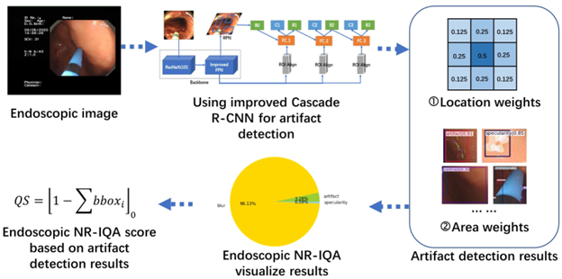
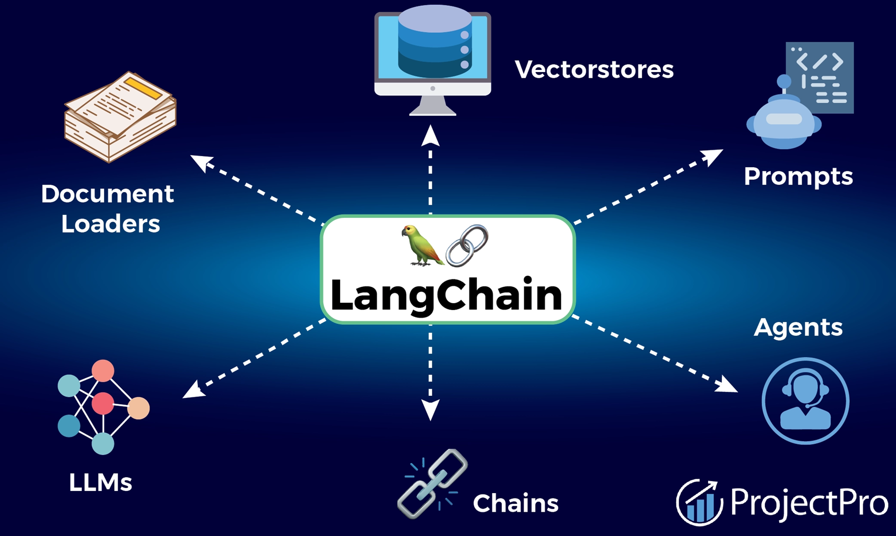

Team Lead
US Presidential Election Sentiment Analysis
This project analyzed public sentiment on Twitter to predict the winning candidate in the 2020 US Presidential Election using machine learning techniques.
It involved extensive data analysis, feature engineering, and the implementation of various machine learning models including Random Forest, Decision Trees, and NLP techniques.
Such a project demonstrates the power of social media analytics in understanding and forecasting political trends, which can be invaluable for political campaigns and market research firms.
Technologies: Python, NLP, Twitter API
#SentimentAnalysis#NLP#TwitterAPI
Team Player
Predictive Analysis for Crime Hotspots
Leveraged predictive modeling to identify high-risk areas for crimes against women in India, assisting law enforcement in resource allocation.
This project utilized data analysis and machine learning techniques to uncover patterns and insights from complex datasets. The implementation of such predictive models can significantly enhance public safety measures and optimize the deployment of law enforcement resources.
Technologies: Python, Scikit-learn, Pandas
#MachineLearning#DataAnalysis#Python
Lead Engineer

Customer Segmentation
Performed customer segmentation using clustering algorithms to help businesses tailor their marketing strategies and improve customer engagement.
Techniques like K-Means clustering and data visualization were employed to identify distinct customer groups. Businesses can leverage such insights to create targeted marketing campaigns, enhance customer retention, and optimize product offerings.
Technologies: Python, Scikit-learn, K-Means
#Clustering#CustomerSegmentation#Python
Team Player

Artifacts Detection using CNN
Implemented Convolutional Neural Networks (CNN) to detect artifacts in images, showcasing deep learning techniques in image processing and quality control.
This project involved the use of TensorFlow and OpenCV for building and training the neural network models. Such applications are critical in industries like manufacturing, healthcare, and automotive, where image analysis and quality control are paramount.
Technologies: Python, TensorFlow, OpenCV
#DeepLearning#CNN#ImageProcessing
Personal

Applicant Tracking System using LangChain
Developed an Applicant Tracking System (ATS) to enhance resume content and streamline the job application process using natural language processing techniques.
This project demonstrates the integration of NLP models and automation to improve HR processes, making it easier for companies to identify top talent and manage large volumes of job applications efficiently.
Technologies: Python, LangChain, NLP
#NLP#Automation#ATS
These hands-on industry-level projects and personal projects driven by my interests have given me the confidence to apply data science solutions to various problem scenarios across multiple domains such as supply chain, time series analysis, healthcare, finance, and more. The insights gained from these projects have enabled me to tackle complex business challenges and contribute effectively to organizational success.